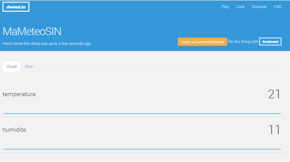

ETAPE 2 : Transférer les données vers le service Dweet.io
Méthode : ETAPE 2 : Transférer les données vers le service Dweet.io
Compléter le programme fourni avec les informations suivantes :
1. Nom que vous souhaitez donner à l'objet qui contiendra la température et l'humidité
1
/************* donnez un nom à l'objet qui contiendra les données à envoyer dans dweet.io *********/2
String monObjet =String("MaMeteoSIN");
3
2. Identifiant et mot de passe de la box (à compléter) :
1
/*************compléter cette partie avec l'identifiant et le mot de passe de votre Box*********/2
// identifiant de votre box3
const char* ssid = "....................";
4
// mot de passe5
const char* password = "......................";
6
3. nom de l'hôte : Serveur web
1
/*************indiquez le nom de l'hote dweet.io par exemple *********/2
// serveur web3
const char* host = "dweet.io";
4
Dans le loop, connexion au serveur dweet.io :
1
//***********************************************************************************2
//-------------------- 2. connexion au serveur web-----------------------------------3
//***********************************************************************************4
5
Serial.print("connexion en cours sur le serveur ");
6
Serial.println(host);
7
Serial.print("Nom de l'objet : ");
8
Serial.println(monObjet);
9
10
// utilisation de la classe WiFiClient pour la creation des connexions TCP11
WiFiClient client;
12
13
// le serveur Web attend en général sur le port 80 ou 443 pour HTTPS14
const int httpPort = 80;
15
16
// si la connexion ne réussit pas...17
if (!client.connect(host, httpPort)) {
18
Serial.println("connection failed");
19
return;20
}
21
22
// la connexion fonctionne on cree l'URI pour la requete23
String url = String("/dweet/for/");
24
25
Serial.print("Demande URL : ");
26
Serial.println(url);
27
Envoi des données par la méthode HTTP POST :
1
//***********************************************************************************2
//-------------------- 3. envoi des donnees sur le serveur web-----------------------------------3
//***********************************************************************************4
5
6
// on envoie les données7
if (client.connected())
8
{9
Serial.print(F("Envoi de la requete..."));
10
// On l'envoie au serveur sur plusieurs lignes11
// POST HTTP/1.112
// Host: dweet.io13
// Connection: close14
// 15
// La première ligne indique la version du protocole HTTP16
// La deuxième le nom du serveur17
// important car on peut trouver différents serveurs à une même adresse IP18
// La troisième ligne indique que le serveur doit fermer la 19
// connexion apres la réponse et ne pas attendre d'autres requêtes.20
21
// affichage dans le moniteur serie afin de controler ce qui sera envoyé au serveur web :22
Serial.println(String("POST ")+ url + monObjet +String("?temperature=")+String(t)+String("&humidite=")+String(h)+ " HTTP/1.1\r\n" +
23
"Host: "+host + "\r\n" +
24
"Connection: close\r\n\r\n");25
26
// envoi de la requete 27
client.print(String("POST ")+ url + monObjet +String("?temperature=")+String(t)+String("&humidite=")+String(h)+ " HTTP/1.1\r\n" +
28
"Host: "+host + "\r\n" +
29
"Connection: close\r\n\r\n");30
31
// On attend 1 seconde32
delay(1000);
33
}
Vérification de l'arrivée des données sur dweet.io :
L'URL suivante permet de voir l'évolution de la température et de l'humidité en temps réel
https://dweet.io/follow/MaMeteoSIN
